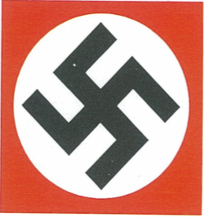
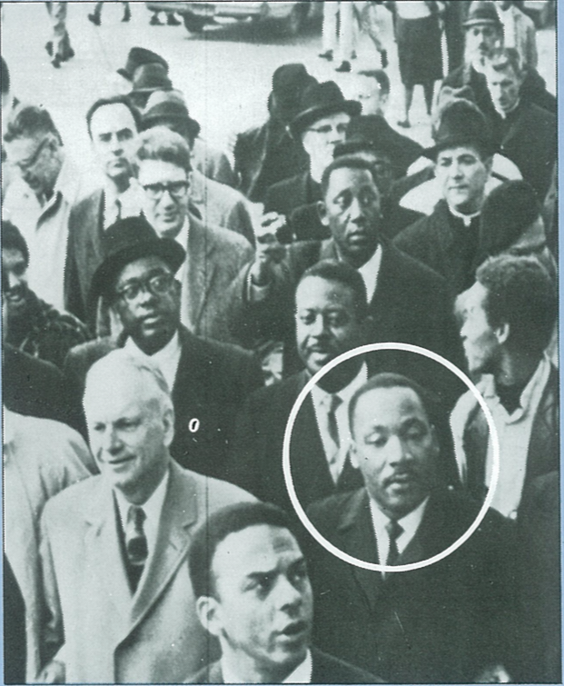

思想激荡的时代
(p584)
——一个波士顿讲道士“如果德皇是基督徒，地狱里的魔鬼也是基督徒。”
卓越的史学家汤恩比认为到了现代，世界上的重要宗教，已为后基督教的三大思想即民族主义、共产主义和个人主义所取代。三种思想都是不动感情、不讲人性的。
十九世纪现世化的进展，在马克思主义、达尔文主义与“实证主义”支援之下，削弱了西方思想的基督教基础。植根于基督教和启蒙运动的自由传统，强调自由；但古典经济学和社会“达尔文主义”使自由主义沦落为谋私利、和高度竞争的个人主义。社会激进主义也从这些来源汲取营养。不过马克思科学的唯物主义的社会主义，和早期思想家的自由人文主义，大相迳庭。民族主义从美国独立、法国革命和浪漫主义运动中脱颖而出。民族主义是一种种族排外主义，最后演变成军国主义、帝国主义和种族主义。
这三种新思想体系一民族主义、共产主义和个人主义，在二十世纪都带上了宗教的色彩“每个体系都设有最高的目标一爱国心，阶级斗争，或属世的人文主义。每个体系都有它的神圣象征和仪式，经典著作，教条，圣者和极有魅力的领袖。要先掌握这些思想体系所提要求的性质和范围，才能暸解基督教的反应。
新世纪开始时，自由人文主义者和主张关怀社会的基督徒，都宣布有一个更好的世界一或是天国一就要来临；但也有人怀疑科学是否真能给世界带来进步。他们认为工业革命和城市化的坏处远远超过科学带来的好处。新思想体系对人类的前途和性质的看法喜忧参半。马克思从所有权关系来看人，达尔文把人当做适者生存，佛洛伊德说人只是性欲本能潜在力量的反映，自制和自由选择根本就不存在人里头。人的前途没有希望，有的只是失望。
第一世界大战
1914年以前，国际和平运动甚有进展。好些国家设立争取和平的组织，若干国际会议也想致力和平。欧洲大陆讲求人道和自由的思想已开始在重要性上超过英、美社会的基督教反战观念。 大家盼望能在国际社会里设立一些机制，出面解决国家之问的争端。像海牙国际常设法庭和卡内基国际和平基金会之类的机构，就是在这个时期成立的。美国国
务卿布赖恩(William Jennings Bryan）是位杰出的基督徒，他希望谈商“降温的条约”来防止国家轻率卷入战争。尽管有这些善意的努力，无奈军备竞赛逐步上升，帝国主义国家在海外搞对抗，国际紧张还是与日俱增。只要有一点星星之火，就能点燃起这个欧洲火药库。1914年六月二(p585)十八日，奥匈帝国王储在萨拉热窝遇刺身亡，给了这个燃点的火花，大战爆岭。
军队兴高釆烈地走向战场，天真地奢望在几个星期之内就能取得辉煌的胜利，解决他们的国家面临的一切紧急问题。实际上，出现的却是一个僵局。西方所谓的文明民族，参加了史无前例的一场大屠杀，消灭了一代人中的大部份精英。自由人文主义的理想根本不足应付时代的要求。被扣J制的战争情绪突然爆发，粉碎了和平拥护者的乐观情怀。
世人首次尝到“总体战”的滋味。战争在海、陆、空三方面进行。工业生产受到严格控制，好让武器源源不绝供应。各国政府监督国民的经济生活，严格管制工业产品、食物生产、和劳工与物资的分配。通过海军封锁和潜艇作战，双方都想扼杀敌方的经济。
政府限制平民的活动。为了打击国内的颠覆行为，公民权利被削弱。对战争持保留态度的人，被迫顺从政府政策。新闻检查制度被用来防止资敌新闻的扩散，又藉新闻来鼓舞民心士气，灌输团结意识，要大家目标一致，坚信他们是为正义而战。双方的教会领袖都发表谈话支持；特别是英国的自由主义作家们，他们反复强调这是一场反对暴政、独裁和军国主义的“圣战”。另一方面，基督教团体则在战区救济灾民、援助战俘和伤兵。
与德、奥对抗的协约国的宣传人员带著偏向报导新闻，尽量利用德国击沉卢西塔尼亚豪华客轮和处决女护士卡维尔之类的暴行来作宣传。这就赢得了美国有权势的人士，特别是宗教界人士的同情与合作。美国总统理想主义者威尔逊是长老会牧师的儿子，他下令美国参战时，大家都清楚理解到，一定要把同盟国彻底打败，才能建立起一个崭新的世界。俄罗斯独裁政权1917年三月问覆亡，进一步加强了这场战争是民主政治与集权主义之问斗争的观念。交战双方都没有取得突破。后来俄国过激的马克思主义者布尔什维克在1917年十一月推翻了执政的温和派，俄国接著退出战争。德国人为了求取胜利，准备在西线作毁灭性的出击，但是美国雄厚的资源封了德国的胜利之门。德、奥同盟各国最后崩溃，国内革命力量勃起。德国于 1918年十一月投降。

和平与惩罚
在后来举行的巴黎和会上，十(p586)九世纪的民族主义气氛弥漫会场，有些政治家和许多宗教界人士，希望民族自决，防止德国再起，主张用超国家的组织，加强国际法来克服未来的冲突。但是他们的希望，在权力政治、民族主义狂热与恐惧共产主义向欧洲蔓延等等因素左右下，成为泡影。
与会代表认为必须严惩他们的主要敌人德国，最后通过的《几尔赛和约》是一个由单方面制定的和平，批准在东欧设立六个新国家，作为阻止布尔什维克威胁的堤坝。
对土耳其的解决办法饶有意义。协约国在战争期问答应过苏丹统治下的臣民获得独立，可是英、法之问订有密约，私下瓜分了奥斯曼帝国的土地。英国还在 1917年《贝尔福宣言》中支持犹太人在巴勒斯坦复国。结果巴勒斯坦和外约但成了英国托管地，黎巴嫩和叙利亚成了法国托管地。这就造成了中东的阿拉伯人、犹太人和欧洲人之问的紧张关系。
巴黎和会面对的另一困难与信奉正教的少数民族有关。这些少数民族在奥斯曼土耳其人治下几乎是独立自主的。在这次大战中，先有亚美尼亚人遭受大屠杀，后有希腊少数民族被杀戮，引起西方强烈的反应。但土耳其民族主义者极端憎恨在巴黎达成的和议条款，他们在凯末尔(Mustafa Kemal）领导下，于1923年强迫修改了一些和议条款。凯末尔领导土耳其进入二十世纪，将国家现世化，削减了伊斯兰与基 督教少数派对国家的影响力量。
最后，巴黎和约设立了国际联盟一一个由威尔逊提议的保卫世界和平的国际组织。他认为在这个新秩序里，公开达成的协议能保证所有国家的政治独立和领土完整。他认为国际联盟给和议提供了一个道义基础，是一种可以纠正和约缺点的机制。
两次世界大战之问，世事变化很大。首先，这次大规模的“西方内战”削弱了欧洲在1914年以前的国际地位。新兴的工业巨人美国和日本如今在帝国太阳下找到了位置。英国不得不放松它对爱尔兰、印度和中东的控制，而1931年的《威斯敏斯特条例》则赋予白人自治领（加拿大、澳洲、纽西兰、南非和爱尔兰）在不列颠国协中与英国同等的法律地位。北非和东南亚殖民地上的民族主义，逐渐削弱了法国在属地实施文化上同化的政策。
战争破坏了西方国家的经济，整代的精英丧生疆场。民主国家放宽了政治参与的基础（包括妇女有了选举权），但为失业与通货膨胀所困。社会主义者的煽动和对福利的要求加强了。左翼政党（如英国工党和德国社会民主党）现在参加了政府。社会主义与战后十年间世俗主义的迅速发展适相配合。基督教和天主教同样不能保有青年人的忠心。思想比较进步的人，把他们的精力用在扩大俗世思想上。
国际联盟开始时虽然抱负很大，却未能防止侵略、维护和平。一开头美国就未能参加，德国和苏联又被排除在外。由于这种缘(p587)故，布尔什维克认为国联是资本主义推翻俄国共产主义的机关，德国人认为它是压制德国的武器。国联的各会员国维护各自主权，丝毫不容削减。两次大战之问的岁月中达致的重要裁军和政治协议，都是在国联的架构以外进行的。国联确乎在科技与经济领域内促进了国际合作，并在它监督的前德国与土耳其领土的托管地内，保证了信仰和传教的自由。
新威胁
在两次大战之问的岁月中，民主政治遇到的最致命的挑战是极权主义。极权主义国家的特色是，官方的思想体系控制人民生活的一叨重要面，希望建立起一个完美无缺的国家：有一个单一的人民的政党，由一个在一位领导人带领下的小团体，控制人民生活的几乎每一方面；又有一支政治警察部队，使用行之有效的科学与心理学技术，反击政权的所有“敌人”；传媒与教育由国家掌握。极权政府严密管制经济和作战工具，希望进行一场社会革命，培植完全献身为党为国的新型人类。只有在二十世纪人民普遍识字、现代科技与大众民主出现之时，真正的极权制度才能出现。极权政府给基督教会提出了好几项不同的挑战，教会用各种不同的方法作了回应。
右翼的极权主义通常叫做“法西斯主义”。他们强调阶级团结、重申传统价值观念，以消除个人的挫折感和社会疏离感，并降低社会与经济压力。法西斯运动高 举国家，力捧民族的使命、帝国的伟大、种族的优越、或国家本身。法西斯主义常常提倡某种几俗宗教、反对理性主义与精英主义，强调斗争、行动、暴力。勇气与自我牺牲等价值。他们准许私有财产和资本主义企业存在，但严密加以控制。
一美总统威尔逊“我们以无私的真理―驯士的身份参加战争。”
战争失败和接踵而至的经济危机，形成了法西斯主义在意大利出现，从军多年的墨索里尼在 1919年成立了法西斯党，他做过社会主义运动报刊的记者，他从神话般的“进军罗马”政变中取得了政权(1922)，民族主义者的不满和对共产主义萦绕不去的恐惧促成了这场政变。他的政权的特点是警察控制、恐怖、新闻检查和宣传。他的“公司国家”（将国家当成一部大机器，置人于不顾的体制），只是虚有其表的经济民主，主要受惠的是大工业家和地主。
墨索里尼达成罗马天主教与意大利国家之问的和解，结束了从 1870年开始的对抗局面。枢机主教阿契尔。拉蒂1922年获选担任教宗，是为庇护十一世。他在1920 年亲身经历过共党攻打波兰，是共产主义和传统自由主义的死敌。他为了解决那个“罗马问题”，对意大利法西斯政权某些恶行置若罔闻。
虽然墨索里尼本人直言无隐地反对教权，但他看到与教廷和解在政治上对他的许多好处，所以他在1929年的《拉特兰协议》巾和教宗妥协。教廷放弃它对意大利的领土要求，承认意大利的统治王朝，答应不干预政治，和接(p588)受任命主教须由国家批准的规定。法西斯意大利则承认梵蒂冈为独立的主权国家，由教宗统治，赔偿教廷1870年所受的财政损失，建立天主教为“国家唯一的宗教”，答应把教会律例的规定扩大到婚姻事务，准许中学教授宗教课程，并承认天主教修道会和社团具有法律地位。
“上天预备的人”
庇护十一世赞誉这个意大利独裁者为“上天预备的人”。但墨索里尼的国家至上的见解和他对教会冷嘲热讽的态度，不久冷却了他们之问的关系。庇护十一世在1931年五月的教宗《四十年通谕》(Quadragesimo anno)里批评了“公司国家”。过了一个月，他在《毋须如此》(Non abbigmo bisogno）的通函里抨击法西斯镇压 “天主教行动”（一个致力于社会与教育事业的平信徒团体）。最后，墨索里尼让步，同意准许“天主教行动”继续存在，但行动须受严格限制。
意大利教会人士一般都赞同征服埃塞阿比亚和在西班牙内战中支持佛朗哥之类的海外冒险。若对法西斯主义有批评，通常只限于教廷与国家竞相争取天主教徒效忠上，而非哲学、人道和神学上的大问题。
罗马天主教与法西斯式运动之问的联系也存在于欧洲其他地区。例子不一而足，其中包括奥地利陶尔斐斯的“教士一法西斯” 政权，西班牙长枪党政权，葡萄牙接受耶稣会训练的萨拉查的 “新国家”和匈牙利札拉西的“箭
头十字党”。反民主的保皇党莫拉斯和他的法国行动党在法国和比利时的天主教徒中问有许多追随者。但教宗在1926年谴责了普拉斯和他无神论的观点，这个团体的影响日趋式微。
德国国家社会主义（纳粹主义）也从人民对战争感到幻灭、憎根和约、恐惧共产党和经济危机中得到滋养。该党领袖、出生于奥地利的希特勒，1933年一月三十日出任德意志共和国总理。他在两年内取得大过墨索里尼的控制国家的权力，墨氏依法仍须臣服于意人利王室。
纳粹党的基本组织观念是德国人民绝对团结在领袖（Fuhrer元首）之下，还要把这种领导原则在全国的政治、经济与社会结构中贯彻。通过广泛管制和经济计划，一个“国家资本主义”取代了资本与工业自主的经济。纳粹把所有不同的竞争阶级和利益集团全都结合在国家之中，想形成一个理想的超级社会。他们发动了一场意义重人的社会革命，但是不能赢得军队与教士的竭诚效忠，工人和农民的拥护也不热烈。
在思想体系上，“国家社会主义”与意大利“法西斯主义”是一丘之貉，所不同的是，国社党是一种乌托邦式的反现代主义运动，扬弃启蒙运动与工业革命的基本假定，而歌颂一种原始的理想化了的过去，正是华格纳歌剧和古德意志英雄故事中所描绘过的，那里没有复杂的现代生活。人种问题是纳粹思想体系的中心。德国思想家强调“人民”
“国上”与“血液”一德国人民(p589)具有的一系列特性是和他们的故国和环境分不开的，这就使他们和别的民族不同。外国人、外国观念和外国制度，特别是和犹太人有关的，都具有腐蚀性。御用人类学家制定人种“科学”，使人种有优劣之分。“社会达尔文主义”提供了团体与国家之问互相竞争的观念，优秀民族有权剥夺劣等民族的权利并加以毁灭。
“毁灭文化的种族”纳粹理论家凭借这些观念发展了f也们野蛮的“反犹主义”。他们主张要恢复已失去的旧日的纯洁，必须清除现在不洁的东西。犹太人是所有现代罪恶之源，是 “毁灭人类文化的种族，给世界带来了资本主义和共产主义。” 希特勒宣称甚至基督教信仰都是犹太人的阴谋诡训一“人类有史以来所受到的最沉重的打击是基督教的出现。布尔什维克主义是基督教的私生子。二者都是犹太人的发明。”纳粹坚决认为“创造文化的”亚利安人种，正从事生死攸关的斗争。消灭犹太人种是恢复纯洁的过去必不可少的净化社会行动。
另一个基本观念是空问，优等民族需要更多的生存空间。希特勒的目标是在俄罗斯和东欧取得空问，那样德国就无须依靠进口食物和原料。德国殖民者能在那里定居，离开城市的败坏影响。这些单纯的自由民，可替未来的斗争提供取之不竭的武士。人种的纯洁辅以文化的纯洁，可使德国恢复健康。

纳粹剥夺了德国犹太人的公民权利，用抵制，夺取职业，并不时困扰等等办法，逼使他们移民。德军攻取东欧后，那里的犹太人口要大得多，反犹暴行愈趋激烈。纳粹行刑队在俄罗斯当场处决的犹太人数以千计。波兰的犹太人被赶进城市巾的贫民窟，过著非人的生活。本来用作折磨反抗人士、声名狼藉的集中营，对犹太人来说，其用意更加凶恶。从1940到1941年，纳粹又在波兰建立了一系列的新集中营，其中最著名的是奥斯威辛和特雷布林卡。纳粹在这里实施了“最后解决”，灭绝欧洲的全部犹太人。男女老幼全被运到这些“死亡工厂”，用精心策划的冷血残(p590)忍方式将犹太人打死、饿死、枪毙、累死、用作医学实验和用毒气毒死。合理的估计，死于大屠杀的犹太人有六百万之多。
——“德国基督徒会”的座右铭“纳粹党徽挂在胸前，十字架存在心里。”
纳粹治下基督徒的处境也是朝不保夕。希特勒生于天主教家庭，幼时受过天主教教养，后来他抛弃了所学到的天主教原则，选择了当日的世俗哲学。但他从没有正式切断他和教会的联系，教会也没有开除他的教籍。国家社会主义本身是一种迎合千百万渴望国家再生的德国人的新信仰。希特勒厌恶宗教，主要由于政治原因，他妒嫉天主教对其信徒的权威；他厌恶新教，是因为新教缺乏团结和权威。可是他在取得政权期问，强调他的政纲的民族情怀，并声明支持教会在国内的地位，以便获得新教与天主教双方的拥护。
德国的败北与在1918年的革命，使新教领袖大吃一惊。他们对新成立的共和国态度冷淡，因为在他们眼中，共和国好像是给社会主义和罗马天主教政客支酊著似的。1919年的“威玛宪法” 规定政教分离，这就消除了政府控制教会的威胁。可是教会仍然保持有利的法律地位，继续接受国家津贴，保有它们在教育上发挥的作用。
大多数教会人士同情反对共和的右翼。1929年情况恶化，“国家化运动”赢得了他们的支持。许多基督教信徒，特别是神学上的保守派和自由教会人士，忽视纳粹主义反犹和无宗教信仰的一面，言赞扬希特勒反对共产主义的立场，同时号召“基督教积极化”。希特勒聪明地控制住罗森堡之流的反基督教激进份子，免得吓走教会领袖。1930年代兴起的“德国基督徒”中的三个不同派别，甚至在教会内部还组织了一个亲纳粹党。
靠纳粹主义取得再生？保守派教会人士觉得，如果以谅解的态度对待纳粹主义，可能让它摆脱种族主义等等毛病，带来国家的再生。许多新教信徒欢迎希特勒在1933年推翻民主，作为以“基督徒”的统治者取代“马克思主义”共和国的第一步。他 “亲道德、亲家庭”的立场也具有吸引力。他强调生男育女的重要，力主妇女应回到家庭。他要肃清黄色书报、色情事业和同性恋。虽然有些天主教高层人物对 “国家社会主义”感到不安，其中大部份抱有和新教相同的看法。
希特勒1933年一月后对教会的政策纯粹是务实的。他知道教会具有庞大的权力，不愿意再发动一次文化斗争。可是他假定到了适当的时候，过时的基督教信仰将行消逝。天主教主教们赞成新政权。天主教中央党投票赞成希特勒以直接命令统治国家，中央党与天主教属下工会“自愿”将组织解散。
作为回报，“元首”希特勒同意与梵蒂冈订立协约，保证天主教徒可以信奉并实行其信仰，又保障教会独立。复杂的协议肯定了与梵蒂冈的外交关系，确立了教士的法律地位，并列明任命主教的规定，保护天主教教育制度，给军队、监狱和医院提供教(p591)牧照顾，准许非政治性的宗教团体存在，并严禁教士从事政治活动。
这项协议大大提高了希特勒政权的声望。根据这项临议，教会批准解散宗教（教派的）政党，禁止教士从事政治活动。这是极权国家巩固政权的一个里程碑。许多教会人士不敢公开与希特勒政权冲突，害怕危害到仍然受协议保障的那些特权。纳粹几乎从闻头就违反了协议；教会受到攻击时，不但不提供保护，反而不断摧残发展中的天主教的反抗行动。
一纳粹版《平安夜》赞美词“平安夜，圣善夜，黑暗中，光华射，
只有元首坚持战斗，昼夜照管德国，
保佑我们平安。”
1933年，一个呼吁把二十八个地方教会统一成国家教会，并以一个“帝国主教”为首的运动横扫新教。这好像和希特勒要把所有团体完全由元首和国家控制的政策不谋而合。“德国基督徒会” 选出了狂热的纳粹份子马勒为领袖。他们还按照纳粹模式改组教会，在教会管理上引进了元首原则，并采纳“优秀民族条款” 把有犹太血统的人通通从教会职员中清除出去。可是希特勒对这些取好他的步骤无动于衷，拒不接受“德国基督徒会”所提成立一个国家社会党的国家教会的观念。他觉得教会的唯一功能是照料仍然需要宗教信仰的那些愚昧无知的人。任何教会，即使是纳粹化的教会，都有分散全民对他效忠的可能；他不能容忍他的权力受到限制。
希特勒越来越听从反基督教的纳粹份子的话，这些人要他清除 “德国基督徒会”和在教会里反对他们的人。1934年以后，纳粹对“德国基督徒会”的支持日渐减少，虽然许多人仍在教会内任职。德国基督徒会更趋极端，说纳粹运动是基督教教义真正的实践，可是他们也发现要取得纳粹的好感，必须全心全意实行纳粹的种族观念，歌颂元首。1935年由克里主持的‘宗教事务部’成立后，他们和‘德意志帝国主教’ 已起不了任何作用。
德国教会分裂
纳粹政权侵犯宗教事务与日俱增，许多新教信徒和天主教信徒开始警觉。接踵而至的是著名的 “教会的奋斗”(Kirchenkampf）。尼慕勒博士在1933年九月组织了一个‘牧师紧急联会’以对抗“德国基督徒会”的主张。这个团体在下一年宣布不接受马勒的领导，另外成立了一个教会管理机构叫“认信教会”(Confessing Church)。“认信教会”的神学基础刊载在1934年的《巴冕宣言》 (Barmen Declaration）里。这份大部份由神学家巴特执笔的宣言，呼吁德国教会重返基督教的中心真理，不要承认极权主义国家所主张的在宗教与政治事务上应有的地位。
《巴冕宣言》的目的不在提出政治抗议，“认信教会”并不打算领导反抗纳粹主义。那是一个神学文件，反驳“德国基督徒会” 的异端歪曲教义。事实上，“认信教会”的领袖们三番五次表明他们效忠国家，还恭贺希特勒在政治和外交政策上的举措。因为路德传统上拥护当权势力，“认信教会”决定不成为对抗的自由教会，只图保护正统基督教信仰不受新思潮的腐蚀。
——勒扎塞牧师“基督通过希特勒来到我们门身边…
我们今天知道救世主来了…
我们只有一个任务，要做德国人，不做基督徒。”
(p592)
“认信教会”在纳粹秘密警察 “盖世太保”困扰和大多数新教领袖抨击之下，过的是危机四伏的生活。它的存在令纳粹难堪。它见证上帝统治世界，无异在挑战希特勒的极权主义。“认信教会”中如潘霍华等少数几人深知他们的政治责任，勉强参加了反对希特勒的抵抗运动。但是大多数德国人的保守主义和民族主义，却阻止他们为民主和个人权利仗义执言。
战后，在1945年十月，尼慕勒博士和“认信教会”仍然在世的领袖们，―参痛地承认他们的过失，当日没有大胆发言反对纳粹政权，尤其是在纳粹当权前期。
反对“新异教”
德国天主教徒也要拥护国家，同时保持他们的特权地位。他们记得俾士麦时代的文化斗争，但是也卷入了教会的斗争中。纳粹政权慢慢地、但是按部就班地，破坏了德国的天主教组织网，箝制了天主教报纸和学校。教会人士对“新异教”的扩张和事工受到日益加强的限制，曾表示震惊但毫无结果，最后他们向梵蒂冈求助。
庇护十一世在不久将出任教宗的教廷国务卿枢机主教帕塞黎协助下，草拟了1937年三月十四日的《深表不安通谕))(Mit brennender Sorge)。这是教会批评纳粹主义的第一个重要文件。秘密运入德国以后，在棕树主口那天，全国每一个天主教堂都宣读了一那时还没有一份落入纳粹党手中。通谕抗议国家对教会的压迫，号召天主教徒反抗种族土义和国家崇拜，反对歪曲基督教的教义和道德观念，并保持他们对基督、对教会、对罗马的忠诚。教宗谴责纳粹的暴行，但是没有抨击纳粹的极权主义，表示和解的门还是敞开著的。
希特勒起初极为震怒，其后决定避免决裂，采取了绝对缄默的态度。希特勒知道有德国天主教一般信徒支持他，他要做的只是对教会的活动和教士加强压力，消除有组织的反抗行动。纳粹对下层人员的异议，处分十分严厉，但不愿对明斯特主教盖伦等显要采取行动。盖伦在1941年八月公开抨击安乐死计划；在群情激愤中，希特勒被迫搁置该计划。
共产党的桃战
共产主义是极权主义的左翼，一般出现在穷困和开发不足的国家。共产主义制度在许多方面都和右翼极权主义相同：他们强调独裁，拥护具有魅力的领袖；有一个权力集中的党，其党员构成新秩序的“精英”；党纪严格，行动坚决，拥有秘密警察和集中营；使用暴力，甚至加以美化，来达成政权的目标；一味抹黑敌人（华尔街银行家和帝国主义扬基佬）；用宣传和新闻检查来规范和指导舆论；对青年实施思想教育；严格管制经济，仇视有组织的宗教。
它的思想体系强调工人阶级，革命是社会改革的手段，强调无阶级社会的乌托邦式理想。列宁是极权共产主义的主要理论家，(p593)他认为他的著作逻辑地发展了马克思的历史辩证唯物主义。他制定了党的理论，又规划了能保证无产阶级最后胜利的革命手段。
根据列宁的理论，党是一个虽小却紧密团结的组织，把政治意识灌输给群众，并领导群众进行政治斗争，甚至代表工人夺取政权。为了取得行动一致，党要在 “民主集中”的基础上组成。党的领导机构由党员选出，代表群众利益，但不能脱离党的“路线” 一由党中央制定的战术与战略。列宁相信工人与农民联合起来能推翻沙皇政权，建立无产阶级专政，主持国家的经济发展，创立没有阶级的社会。他领导的布尔什维克与民众选出的代表会议（苏维埃）结成一体，1917年三月，从已取代沙皇统治但摇摇欲坠的共和政权手里夺得政权。他把他的理论付诸实践时，敌人开始反击，引起一场惨烈的内战，和西方盟国的干涉。托洛斯基挽救了危局，他白手起家建立了‘红军’，用了两年时间把‘白军’ 打败。
布尔什维克从托洛斯基的“永久革命论”一除非别的国家发生革命，俄国的事业难以成功一出发，在1919年成立了共产国际（第三国际）来协调世界革命运动，并寻求海外援助。1919年有一个短暂的时期，共产党在匈牙利和巴伐利亚当政，美国民问兴起一片反左的浪潮（恐共症）“但世界革命从来没有开始。俄共认识到，欧洲资本主义国家的力量大部来自它们的‘新帝国’，共产党立即支持殖民地的解放事业。
列宁于1924年逝世，掀起了托洛斯基与野心勃勃的斯大林之间惨烈的领导权斗争，结果后者于1927年取得胜利。斯大林年幼时在里些旦堑读过生正立神学院，学业未成就放弃宗教，接受了马克思唯物主义。斯大林深知短期内把革命扩散到国外的希望非常渺茫；他用他的“先在一个国家内建立社会主义”的理论，对抗 “永久革命”的理念。他主张俄罗斯必须凭借自己的力量建设成一个高度工业化的国家，才能和资本主义国家分庭抗礼，抵抗他们的侵略。
第一个五年计划(1928)奠定了极权控制全国经济与社会生活的基础。共党下令实施农业集体化，清算反抗的富农阶级。用农业产生的资本，来建立重工业。虽然工人工资低，消费品生产不足，俄罗斯已成为一个工业国家。
斯大林也十分注意教育与青年组织，争取青年拥护新秩序。俄罗斯于1922年改名为苏联，党对苏联的人民生活与思想实行全面专政。结果是国家机器的加强，而非理论上所说的逐渐凋谢；斯大林说，只要资本主义国家包围苏联的情况一天存在，就有必要加强国家“斯大林喜怒无常，多疑善变，他这个独裁者要比他在德国的对手希特勒残忍暴虐得多。他使用秘密警察和集中营来镇压那怕是极轻微的岐见，消灭所有潜在的敌对者，包括他的老布尔什维克同志，这些人都给他在1936到38年的莫斯科大审判后枪毙了。他还把‘个人崇拜’带入苏联共产主义体制中。
(p594)
-H.L.埃利森基督教会与犹太人
起初犹太人和外邦人都认为基督教是犹太教的一个小派”犹太当局反对基督教的教义，也反对基督教不要求外邦人遵守犹太人的教规，就准许入教，因此对初期教会进行压迫和迫害。犹太人两次反抗罗马统治（主后66-74, 主后132-35）以后，多数基督徒都和犹太人断绝关系。接受了基督信仰的犹太人拒绝支援反抗行动，成了国民公敌。从这时起，很少犹太人归信基督教。
基督徒越来越认为犹太人吝啬，故意不做好事。基督教获得康士坦丁承认以后，法律上歧视犹太人的事件日有增加，逐渐被褫夺所有权利。在法国大革命以前，教会和国家对待犹太人的态度，都是一样。
在黑暗世纪和中世纪，犹太人不时受到困扰，常常被驱逐，有时还被屠杀。其中最恶劣的情况出现在十字军第一次东征时 (1096-99)。犹太人在1290年被逐出英国；在1306和1322年，最后在1394年，被逐出法国。犹太人越来越必须在接受基督教或受驱逐之间作选择。西班牙1391年的大屠杀，造成了许多“马拉诺” 犹太人，改信基督教，不过只是在名义上。宗教裁判所用恐怖手段调查他们信仰是否真诚；最后在1492年，所有犹太人都被西班牙驱逐出境。欧洲在这个时期，基督徒与犹太人始终很少接触。犹太人被迫穿特殊的衣服，住在特别的几条街或地区（犹太人区）。
文艺复兴和宗教改革时期，有几个学识渊博、胸襟开阔的人，改变了他们对犹太教和犹太人的看法。但是像马丁路德那样的人，除了早期的见解比较善意外，曾责难过犹太人。犹太人 1598年获准在荷兰，1612年在汉堡，1656年在英国（非正式）居住。
从1354年起，波兰是欧洲犹太人的主要中心。波兰国势日蹙，犹太人越来越受到罗马天主教会和波兰人民的鄙视。1772年波兰被瓜分后，大部份波兰犹太人发现他们不是在信奉罗马天主教的奥地利治下，就是由信奉正教的俄罗斯统治。经济压力和俄罗斯 大屠杀（1881-1914年的“集体迫害”）使将近两百万犹太人离开东欧，大部份移居到美国。
十八世纪的启蒙运动令对待犹太人的态度有了新的转变。许多思想家在反对传统基督教时也抨击基督教对犹太人的看法。这使犹太人在法国革命期间（1790)获得完全解放。到了1914年，这种解放已遍及整个欧洲，到达俄罗斯与巴尔干诸国边境。
但是政治上接受犹太人，并未消除一般人对犹太人根深蒂固的偏见。这在1878年的“反犹运动”中到达顶点。这个运动很快扩散到整个文明世界。反犹情绪在希特勒的“最后解决”方案里找到了似乎顺理成章的出路。在这个“解决”中，犹太人大约死了六百万人，占全世界犹太人口的三分之一。就是在犹太人从未受过歧视的美国，反犹情绪也在增加，尤其是在对犹太人不大了解的地方。
自初期教会以来，第一个向犹盔人传教表示关切的，是十八世纪上半叶的莫拉维弟兄会和德国敬虔派。但一直进展不大，直到英国圣公会在1809年、自由教会在1842年、苏格兰教会在1840年成立了向犹太人传道的差会。这个运动很快发展到其他基督教国家，特别是挪威。犹太人集体从东欧移民到美洲，结果在那里出现更多的差传工作。有些罗马天主教徒也在犹太人中问传教“可是大多数归信者都是边缘犹太人。这部份是因为对过去惨痛的记忆，部份是因为犹太人知道大多数基督徒并不真正支持这些传教士。
自从1939年趣竺对垦左人大屠杀以来，基督徒开始强调谅解、消除偏见和对话，而不采用直接布道方式；不过还没有证据，可以证明反犹情绪在消失。
犹太人在中世纪常常遭受迫害，并且限制他们只能在犹太人区居住。这幅插图画的是十四世纪西班牙犹太会堂的逾越节夜问礼拜。
(p594)
人民的鸦片
敌视基督教和所有的宗教，是马列主义的中心思想。马克思主义者说，现有的社会政治秩序决定一切一包括各种宗教信仰在内；无神论当然不例外。宗教是错误的意识，是阶级分裂所产生的对世界的幻象。等到社会在共(p595)产主义中恢复正常状态后，宗教将寿终正寝。直到1980年代的“开放”与“改革”实施前，俄罗斯共产党一直对宗教进行积极的斗争。共产党认为它体现了马列主义的理想，不能忍受任何可见的实体存在于它的管辖范围以外。有组织的宗教是一种反动的社会(p596)力量，只会阻挠社会进步到无阶级的社会，因之必须铲除。
基督信仰显然是另外一种世界观，若对它容忍，将威胁到共产党的权力与声望。同时，基督徒也不能让自己对历史的认识由世俗的历史观取代，不能承认自然可以把人类推向一个最后的完美的天地。此外，由于马列主义强调暴力的阶级斗争，基督徒很难、甚至不可能，和它妥协。布尔什维克革命使基督教面对一个思想体系上的巨大挑战。
俄罗斯东正教会长久以来对国家效忠，但要求教会改革的压力不断增加。虽然沙皇是教会名义上的首长，实际管理教会的是他
委任的‘圣议会’。越来越多的教会人士，认为工人与农民的生活必须改善。除了极少数的激进派圣职人员以外，谁都不承认社会主义是个解决的办法。疯僧拉斯普廷的丑闻，沙皇与皇后干预教会事务，和充耳不闻改革的要求，严重地削弱了尼古拉二世在东正教会的领袖地位，导致东正教会欢迎1917年的三月革命，并支持临时政府。
教会的“全俄罗斯会议”在1917年八月召开。这个比较保守的机构，重新引进旧日管理教会的宗主教制度，向大众革命的意向挑战。布尔什维克取得政权后，没收教会土地，取消国家对教会的津贴，下令改用公证结婚，并把教会学校收归国有。

东正教莫斯科宗主教提孔1918年二月采取回应措施，开除了政府领导人的教籍。教会人员组织示威及武装反抗，号召恢复帝制。人民委员会立即下令政教分离，承认所有宗教团体在法律前一律平等，准许他们信仰自由， “只要不破坏公共秩序或干扰公民权利”。这个委员会又将东正教会完全废除，把宗教彻底逐出国家和公立学校。所有教会财产收归国有。有财政收入的由政府保留，崇拜用的教堂免费租给会众使用。教会与教派被剥夺了法人权利。教会在此后的岁月里，在法律上处于极端不利的地位。
新政权慢慢把法律付诸实施。他们在教会周围建立了一个行政与警察管制的网，逐渐把网收紧。1922年饥荒横扫全俄罗斯，政府下令没收教会财物赈济灾民。宗主教提孔谴责这种亵读行为，号召忠实信徒不要把财物交出，但当局迅速敉平反抗，把他逮捕。但在他公开声明放弃此种“反对苏维埃行动”，并宣布对政府效忠后，获得释放。
同时，教会出现分裂。当时一批教区教士成立了“生动的教会” （革新派），反对宗主教教会的修士主教制传统，采取亲苏维埃立场。1923年，全俄罗斯议会接受了“生动的教会”的改革，切断所有反革命联系，向政府保证无条件效忠，承认政教分离和教会财产收归国有。可是尽管有这次投降，后来又多次表现爱国主义，都没有取得政府的好感，也末能弥补教会的分裂。苏联的教会与政府问关系的不成文法，是有限度的信仰自由权，而且只能给予在行动上对政府效忠的人。
无宗教信仰者同盟
布尔什维克从闻头就支持无神论者。f也们的工作最后都集中于 1925年成立的“激进无神论者同盟”，工作包括散布反宗教宣传和提倡重科学与唯物主义理论的文化活动。同wEj制作反宗教电影、戏剧、广播讲话和文艺作品，主办讲演和展览，并成立无神论博物馆。
虽然俄罗斯共和国1918和1925 年的宪法保障“宣传宗教与反对宗教的自由”,1929年的《宗教会社法》对教会活动加以严格限制，不能从事社会性、慈善性或教育性工作，不能举行祷告会，圣经研究班，妇女会或青年会，甚至不能给教友以物质援助。他们只能自由参加崇拜，对社会的影响力全被剥夺。
同时，国家有无限权力控制宗教团体。每个聚会点都须登记，主管登记的机构有权不准个人被选进入教会理事会。凡举行扩大聚会或宗教大会都须领取特别许可证，地方官员可以微用为名封闭教堂。俄罗斯宪法修订后，―刷去宣传宗教权，这就等于取缔了
非里至些的传道工作。从那时起，只有公开的崇拜获得准许。
1930年代是教会遭受大迫害的年代。教会人士在农业集体化运动和斯大林整肃中被拘禁或遭受清算者数以万计。1936年的新宪法恢复了教士的选举权（他们过去被列为“剥削份子”当然无权参加选举）。但是“神仆”仍然是二等公民，因其所从事的职业及“利用劳动者的落后与无知”。这些 “宗教法西斯”常常受到秘密警察的骚扰。
到了1939年，俄罗斯东正教已濒临解体。当局严格执行反宗教法，无神论宣传，和斯大林的恐(p598)怖，消灭了信义会，蹂躏了浸信会和福音信仰的基督教会。大批俄罗斯门诺会中人于1920年代移往南、北美洲，但是留下来的和其他教派一起吃苦受难。罗马天主教徒、非俄罗斯的少数宗教团体、旧天主教派、复合派（希腊仪式）天主教徒，甚至犹太人和穆斯林都受到同样待遇。
罗马对莫斯科
苏联迫害基督徒大大增加了西方对苏维埃政权的反感。对那里的‘―青况最为吃惊的是罗马天主教会。莫斯科也认为天主教是资本主义。反动派和法西斯主义的盟友，是世界革命的大障碍。1931年，教宗庇护十一世号召举行世界祈祷日，并为在俄罗斯吃苦受难的基督徒望赎罪弥撒，英国和德国的信义宗教会一起参加抗议。苏联的回答是，组织了一个 “激进无神论者国际”对抗梵蒂冈。但在希特勒开始迫害天主教徒时，苏联打了退堂鼓，宣布法西斯主义为主要敌人，呼吁和天主教反法西斯主义者建立统一战线。
教宗庇护十一世日益关注苏联的反宗教运动，在1937年三月―八日，发表了《救世主通谕状Divini Redemptoris)，谴责“共产主义的错误”。他批评共产主义伸展到西班牙和墨西哥，对俄罗斯人民表示同情，提议用天主教的教义代替共产主义。教宗为了对抗斯大林的现行“人民阵线”政策，宣称“共产主义本质上是错误的，凡是愿意挽救基督教文化的人，都不应该在任何举措上和它合作。”这封通谕距离他发表谴责纳粹的通谕只有四天，梵蒂冈坚定地和极权国家内遭受迫害的信徒站在一边。
基督徒与第二次世界大战
德国和意大利的两个独裁者从事扩张的决心，把欧洲带到战争边缘。一个好战集团在日本建立了军国主义政权，与欧洲轴心国
家沆淦一气。斯大林在1939年和希特勒签订互不侵犯条约，给德国进攻波兰开了大门。二次世界大战正式闻始，但是过了两年，希特勒突然袭击与他签了互不侵犯条约的盟友苏联。罗斯福总统压服了美国内部的孤立情绪，为战争预作准备。日本攻袭美国和欧洲在太平洋上的属土，引发了有史以来最大的一次战争。
1930年代的美国基督徒，在对待极权主义独裁者的态度上有了分岐。有些基督徒坚决反对共产党，从而支持法西斯运动，甚至希特勒都能得到若干美国基督徒的好感。据说有一位教会领袖，还赞扬希特勒替“抵抗反基督的共产主义建立了一道防线”。
另一方面，30年代经济萧条的痛苦把许多教牧人员推向左。标榜“自由神学的基督徒”谴责资本主义罪恶，号召进行社会改革，拥护罗斯福的“新政”。有些是活跃的社会主义者，例如尼布尔和托马斯，但很少人加入共产党或赞成发生在苏联的大变化。
美国的和平运动，尽管在意识形态和组织上有分裂，但在1930年代，运动的数目增加了，给孤(p599)立主义增大了声势。自由神学基督徒参加和平运动的很多，但是有些人已认识到，极权主义的威胁与1914年以前的情况不同甚大。他们主张美国应该参加日益扩大的战事。尼布尔等人，对他们视为短视的和平主义感到愤慨，在1941年创办《基督教与危机》杂志，要求教会人士放弃中立主义，采取干涉行动。
第二次世界大战1939年爆发后，各国教会人士纷纷向国家效忠。但是和1914年的情况比较起来，这种承担并不坚决，没有大张挞伐的气势。西方的和平运动崩解了，教会派出随军牧师，照顾作战士兵。少数因宗教原因拒服兵役者，通常（但非永远）都能受到尊重；一向主倡和平的教会和自由主义的和平组织，没有受到干扰。有些教牧人员以实际行动反对战争，致力于促成和谈；有些则谴责盟国对德国和日本进行毁灭性的轰炸。
德国新教和天主教领袖都公开督促教徒支持作战，俄罗斯的教会热烈为“伟大的爱国战争”出力。日本的大多数基督徒，1941年在政府压力之下组成了一个 “教团”，在珍珠港事变后，敦促信徒“拥护大业”。
德国教会人士继续向纳粹政权让步，仍未能免除德国基督徒受难。希特勒最亲密的顾问波曼.希姆勒和海德里治有系统地策划政教关系中的“最后解决”。教会要附属于“新秩序”，剥夺教士的所有特权，让基督教去承受希特勒所说的“自然死亡” 的命运。
在东欧占领地区，神甫和牧师与虔诚的平信徒都被当做罪犯看待，数以千计的人不是被处决就是被送往集中营。虽因战争的危急和需要人民的支援，纳粹没有在德国境内铲除宗教；但是后来发生的事已经在波兰的模范区瓦尔札葛惊心动魄地出现了，那里有组织的教会差不多给纳粹肃清了。
——英国奇切斯特主教乔治.贝麻“因为它们是城市而轰炸它们，故意袭击平民，不管他们有没有直接参加战争。这种行径是错误的，不管是纳粹做的还是我们做的。”
德国人反抗希特勒
但是新教和天主教中都有少数教牧和平信徒公开反对纳粹。由毛奇伯爵领导的“克莱索小组” (The Kreisau Circle)经常在他的庄园里开会，讨论希特勒离开政坛后德国可能遇到的宗教等等方面的问题。虽然没有找到证据，证明这些人曾直接参加1944年七月
二十二日谋杀希特的计划，他们都曾受审，并被定罪。放置炸弹的斯托芬伯格伯爵是天主教徒，但天主教教阶本身并未给他和别的阴谋者任何鼓励。
纳粹把“克莱索小组”组员耶稣会士德尔普神甫和德国神学家潘霍华处死，看出国家社会主义对基督教难以和解的仇视。但是总的说来，教会的反抗微不足道。教会唯一关心的是个人的信仰，传统上对国家的顺服，和保守的观点，这种观点拒绝了左派提出的社会和政治改革的建议，并接受了纳粹是唯一能代替共产主义的主张。
二十年后，美国和其他国家的基督教活跃份子，从德国人在本国土地上争取社会正义的斗争经验里取得灵感和意念。战后，大(p600)家对战时教会内部的冲突记忆尤新，由普通基督徒在教会内负起责任的声音在西德重新响起，并且认为信徒应将政治与社会的责任视为应尽的义务，完全排斥高捧国家替代宗教。基督徒也认识到，在基督中合一能团结各国各族的信徒，他们积极参加教会合一运动。许多教会中人意识到他们过去根深蒂固的反犹情绪之不当，公开对犹太同胞所受的苦难认罪，并支持以色列人建国。
——希姆莱“基督教不根除，我们绝不停止”
斯大林的想不到的盟友
苏俄的战时情况十分不同。斯大林深知教会在战争中对民心士气能有的贡献，教会也能帮助整合在战争中取得的领土，以后还能帮助促进苏联对外政策。
于是斯大林准许宗主教的教会复起（革新教会已于1943年解散），减少无神论宣传，放松执行 1918和1929年的法律。教会可以重新建立它的教阶组织，募集基金，可以在家里给儿童一点宗教教育。东正教和其他宗教团体在 1945年重获法人地位，拥有财产和制作礼仪用品的权利。东正教享有自内战以来最有利的地位，但它仍然受到国家严格的监管。俄罗斯东正教事务委员会于1943年成立，翌年又成立了管理其他宗教团体事务的委员会。它们负责政府与教会之问的联络工作，草拟教会条例并保证法令的执行。
罗马天主教显然看到战争不断扩大后带来的许多问题，在1939年三月选择有才能的外交家帕塞黎枢机主教出任教宗，是为庇护十二世。庇护十二世以建立世界 和平为职志，但对他所憎恶的共产主义或纳粹主义都不存任何幻想。他在1919年亲自经历过共产党在慕尼黑的政变，后来出仟教廷国务卿时，每次他想维护教宗签定的临约，都受到纳粹的欺骗。
可是为了避免冲突、减少痛苦，庇护在占领区做的英勇工作，全都没有成功。怎样克服战争罪恶仍能为劫难中受苦的人服务，似乎难以解决。强烈抨击纳粹罪行说不定只能增加纳粹暴行，因而造成更多的痛苦。假如他噤若寒蝉，梵蒂冈作为道德和精神价值护卫者的声誉就要扫地。
教宗何以缄默？
那么庇护何以对德国侵略，尤其是杀害几百万犹太人的暴行默不作声？批评他的人说，假如他曾有力地仗义直言，威吓要把所有参加执行“最后解决”的天主教徒开除出教，屠杀犹太人的事说不定能够避免。可是如果那样做，就会失去德国天主教徒的拥戴，欧洲整个占领区中有组织的教会可能都被扫荡。保存这些教会似乎比挽救犹太人的性命重要。此外，庇护也不愿损坏德国反俄罗斯的斗争，他认为布尔什维克的祸害大过国家社会主义。
为庇护辩护的人说，他采取绝对中立的立场，不让教廷支持任何一方，是为了使他能有出面斡旋的余地。他也认识到大多数德国天主教徒拥护希特勒，且已受到反犹的感染，不会响应教宗的号召去反抗纳粹犹太政策。另外还有别的问题，例如很难获得对犹太人罪行的确实信息，而且几(p601)乎不可能把这种信息传给足够多的德国人。最后，天主教号召教友对国社党的中心信条采取行动，必然会被认为大逆不道，立
即受到处决。二次世界大战带给教宗的良心危机很不容易解决。
新教的合一运动也因为战争而处于尴尬地位。国际宣教协会1938年在印度马德拉斯开会，指出有一种黩武的“新异教思想”已经兴起，这个黩武主义要求它的从众把它当作宗教来信奉。但会议害怕苏联、轴心国家和日本在亚洲占领区里的信徒受到报复，没有具体指出这些国家的此种罪恶，加以谴责。在1939年以后，国际宣教协会支持德国和欧洲其他国家在亚洲和非洲“已成为孤儿的教会”继续工作，这证明基督教是可以超越国家与教派，组成世界性的团契的。其他合一教会团体则集中力量于国际救济工作，照管战俘与难民，并保持交战双方教会之间的联系。
二次世界大战对基督教会有形和无形的冲击大得不得了。成千上万的教堂被毁，教士遇害，忠实信徒不是受迫害，就是丧失家园。战事暴力的程度因使用装甲车、燃烧弹、导向飞弹、与原子弹等武器的升级而升级，摧毁了千百万人的生命。
基督徒最为关切的重大道德问题有：故意把战争的矛头指向平民，对犹太人和其他少数民族的苦难漠不关心，军事与工业综合体的发展，西方民主国家和极权主义苏联的联盟。这些问题使许多人怀疑是否还有所谓“正义战争”。他们觉得基督教支持战争只能加剧战争。虽然有些基督徒致力于促进各国和各教会和平共处——联合国于1945年成立，普世基督教协会于1948年成立；谁知冷战来临，他们的工作大受挫折。
意识形态间的冲突
1945年后，战胜国发生分裂，以美国为首的西方民主国家采取主动，通过“围堵”政策，对抗苏联的扩张。可是这就和对抗苏联这个国家和对抗共产主义这个政治理念混淆起来了，特别是在1949年“失去了”中国以后。任何地方的共产主义，不管在美国，在欧洲，或在第三世界，都被认为直接威胁美国安全。参议员麦卡锡(Joseph McCarthy)等人进行的“政治迫害”，目的在防止美国内部的颠覆，对外经济和军事援助并和许多独立国家签订防卫条约，则在对抗共党可能利用这些国家的弱点进行渗透。美国承担了几乎在所有地方抵抗共产主义的义务，使用军事干涉也在所不惜。不过后来氢弹和长距离弹道飞弹发展出来，超级大国谈虎色变，不敢轻易谈战争。
冷战虽然以列强对立开始，很快便进入了思想斗争的层面。双方在两极分化的世界里，都有基督徒的支持。苏联以救世主似的口吻宣扬共产主义必须把人民从“帝国主义者”的压迫下解放出来，同时扶植四邻友好政权，来保护里俄罗斯祖国不受到像1914 和1941年那样从西方来的又一次攻击。
俄罗斯东正教的领袖，这时想把别的国家的教会置于他们统辖(p602)之下。出国旅行的教会代表，到处宣扬莫斯科的国际问题“路线”，赞扬苏联的国内成就“他 n’」在苏联推动的和平运动里特别活跃。斯大林1953年逝世后，苏联强调“和平共存”；东正教参加了教会合一工作，并在1961年加入了普世基督教协会。
西方以反共的思想来对抗。基本假定是，世界上有一个普遍存在由莫斯科控制的世界革命阴谋。反对共产主义，是美国对二次世界大战后东西双方对峙的回应。人们因为传统价值在战争岁月的社会变迁中连根拔起而感到焦虑，也成了反共情绪的一个起因。这些变迁包括生活的流动，影响了美国人的安全感；少数民族要求平等；官僚社会没有人情味等等。由于共产主义思想与“主国主义”格格不入，在大众心目中成了所有这些问题的根源。主国人的生活方式是勤劳工作和严格的个人主义，决不能和这个全球性的敌人妥协，以求取“胜利”。
梵蒂冈对共产主义诸多挑剔。庇护十二世把参加共党活动的天主教徒通通开除教籍，公开抨击共党的迫害，支持东欧天主教徒的反共行动，号召意大利的忠实信徒反抗共产党。同样，大多数美国的天主教徒（麦卡锡就是其中一个）都仇视这个外来的意识形态。
支持反共的，还有美国的新教保守派。各地牧师讲道，经常谴责共产主义。不分宗派的全国福音教会联会和美国基督教协进会要求采取坚决行动，制止红色威胁扩散；捐款源源流入若干极右的宗教团体手中，这些团体揭露所称的阴谋，重申美国的和基督教的传统道德。他们特别挑出国际主义者，从事社会活动的教会自由派人士、和普世教会组织，加以攻击。到了1960年代，美国基督徒的反共情绪，已因冷战的趋于缓和、第二次梵蒂冈会议后的自由化潮流，和东西双方寻求和解的努力，渐形和缓。
到了二十世纪六十年代，新的力量开始塑造世界政治。首先是西欧的经济复苏和日趋独立。其次，由于中、苏分裂和莫斯科的东欧卫星国与其他国家共产党领导人日趋专断，本来坚如磐石的(p603)共党集团宣告解体。第三个重要因素是殖民主义的结束，非洲、
亚巡和拉丁美洲国家出现世界政治舞台。“世界革命”这个观念、有了新的解释，成为落后国家与北半球的白人国家在经济和种族上平等的要求。最后，因为核子武器不能用来解决政治争端，又不能在游击战中使用，核武器均衡世界权力的重要性开始下降。
“马克思主义”的挑战
除了传统宗教的再起和新宗教的诞生之外，基督教还要面对带有宗教意义的政治和社会的大挑战，这包括“马克思主义”，种族与宗教冲突，还有“公民宗教” (civil religion）信仰。
民族主义的复兴，使中国与苏联在六十年代分手。中国与美国重新建交，中国重返联合国。毛泽东逝世后，中国在政治上转趋温和。
中国是未发展国家的表表者，在消除饥饿、建立工业基础方面有了长足进步。
1970年后期，中国开始增加与西方的交往。外国商人在中国大量投资，游客纷至杳来，教师与学生的交换成倍增加，香港这块殖民地已在1997年由英国统治下回归中国。特别值得注意的，是基督教的发展。教会获准重新开放，而且发展迅速；中国在经济上逐渐走向市场经济，民主化过程则显得缓慢。
同时，在欧洲的共产国家中，有组织的宗教活动受到程度不同的限制。在阿尔巴尼亚，所有宗教都被根除，声称它是世界上第一个真正的无神论国家。保加利亚和罗马尼亚的教会在严格限制之下活动，而其他共产主义集团国家虽然可以举办大规模的宗教活动，但不能说宗教受欢迎。
苏联对宗教的迫害程度在1959年显然增加，俄罗斯浸信会在应不应该继续接受国家对宗教活动限制的问题上，意见分歧。苏联信徒坚持维护信仰的决心，添上国际舆论的压力，苏联在宗教政策上不可能回到过激的斯大林时代。
虽然教会在赫鲁晓夫和勃列日涅夫时代受到严格限制，到了八十年代，时势明显有了改变。在国际舆论的压力下，政府对待宗教态度转趋缓和。少数几个坦率直言的教会领袖，获准移民；象征西方福音信仰的布道家葛培理博士得以访苏布道。戈巴乔夫1985年当权后，宣布执行改革与(p604)开放政策，进一步放松了对教会的压力。劳工营里的罪犯获得释放。圣经得以在国内流传，封闭了的教堂能够重开，限制宗教教育的条例经过修订，基督教领袖能出国参加国际会议。
——宋尚节（1940年）“全世界的基督徒啊！不要搞宗派、互相毁言旁，要和睦地预备方舟：试想挪亚一家，彼此相打，循环地打，互不同心，方舟能作成功吗？"
以共产主义国家而论，波兰一直维持著很高的宗教自由。绝大多数人民信仰罗马天主教，它给团结工会运动提供了精神支持“ 波兰在1989年成立了非共产主义政府，这是自从东欧战后的第一个。
东德民主共和国政府对基督教的态度时冷时热。它的宪法保障极大程度的宗教自由。大学神学教授、宗教出版社和许多教堂依然存在，但是对从事教会工作的基督徒，在就业上就有若干歧视，政府举办各式各样的仪式和活动，劝使青年离开教会。比较重要的是，政府领导人和教会领袖在1978年达成谅解，教会具有较大的行动自由。教会领袖也答应在“社会主义之内”活动，在制度之内工作。
到1989年，情况已趋明显，苏联不再干涉集团国家的内政，草根阶层的起义浪潮横扫束欧。仿照波兰的前例，先是匈牙利、随后是东德、捷克、保加利亚和罗马尼亚，纷纷由民主政府取代共产政权。在德意志民主共和国内，教会领袖与政府官员交涉，同时劝喻民众采取缓和的非暴力立场，避免了一场流血斗争。
那些过去光顾苏维埃体制的国家现在分道扬镳，东、西德先是逐渐接近，后是合并为一。苏联在境内各民族要求自由的呼声中采取了许多影响深远的改革。
有些人认为基督徒和马克思主义者既然都关心“人道主义”，应该展开对话。
捷克神学家普世教会先驱人物布拉格的汉玛加（Josef Hromadka) 领头，打开了和他本国及其他东欧国家的社会主义社会的积极对话”他在1958年创立了基督教和平会议，觅致束西双方和解。基督教和马克思主义双方的若干人士后来举行过几次会议。
这些在欧洲进行的对话所关心的问题，和拉丁美洲神学家关切的问题类似，他们继续设沃促成一个内容完整的解放神学。
种族紧张
第二个问题，也就是种族问含有宗教意味的斗争，最为严重。在南非和美国，黑白之问的关系在六十年代到达危急阶段。南非的种族隔离政策受到大多数白人教会领袖的支持，但是南非因为实施隔离政策为世界各国所共弃。隔离政策包括订定法律，颁发划分种族的身份证明书，黑白人居住区的分隔、“黑人家园” 迁往偏僻地区，公共场所与设备的分隔，黑人在就业上受到歧视，以及只有白人享有选举权等等。政府拥有几乎无限的警察与司法权力执行这些法律。违法的人可予监禁、拷问、甚至杀害。 南非基督徒在反对种族隔离的斗争中发挥了主导作用。个人如培顿、图图主教、诺德、贝萨克、奇凯恩、和德格鲁奇；团体如南非教会会议、基督教协会与非洲企业；神学声明如《凯罗斯文件》(p605)(1985）与（卡巴尔声明）(1987),都以大胆抨击种族隔离名闻于世。南非各式各样的教会，特别是那些有吸引力的教会，提供了正直生活的模范。到了1990年，连主流教会也在发言反对种族隔离。越来越多的基督徒不再支持隔离制度，国际经济和政治制裁使划盔处于孤立状态，隔离政策开始解体。
在美国，种族分离在教会中根深蒂固。黑人教会之所以成立，主要是因为黑人受到白人教会排斥。可是基督教在公民权利运动中发挥了重要作用。黑人教会是使奴隶解放后的黑人能在崇尚种族主义的社会中生存下来的唯一社会机构。有些白人基督徒认识到种族主义的罪恶，和他们的黑人弟兄联合起来，共同寻求正义。这个运动最杰出的人物是马丁.路德.金。许多民权活动份子都是黑人与白人教牧。美国在法律上现已废止种族隔离，但种族之问在社会和经济上的鸿沟，仍然严重。
在中东和北爱尔兰，种族和宗教的不同，造成社会紧张。以色歹I]在1948年建国，这是巴勒斯坦的阿拉伯人、犹太移民和英国人斗争了三十年的结果。以色列得到了西欧与北美基督徒的支援，一部份是因为纳粹对犹太人的大屠杀令他们感到内疚，一部份是因为许多人认为犹太人重返巴勒斯坦是圣经预言的实现。另一方面，正教基督徒则站在巴勒斯坦人一边，反对以色3iiJ；所以也不纯是穆斯林与犹太教的争端。以色列人与巴勒斯坦人之间的紧张日趋严重，基督徒对以色列的支援逐渐减弱，越来越多的教会领袖呼吁政治解决。同时，正统犹太教极端份子要求成立一个宗教国家，排除所有巴勒斯坦人。暴力事件从未减少。
在北爱尔兰，敌对两派间的歧见，原于历史与社会因素多过宗教因素。基督教与天主教领袖同样痛斥以宗教名义犯下的暴行；但是旷日持久的争端不断消耗著双方基督教团体的生存力量。
公民（社会）宗教
对基督教生存的第三种威胁，是“公民宗教”(civil religion)，也叫‘社会宗教’或‘公民自然神教’。它是一套由一般人接受的宗教情操、象征和观念的结合物，被用来从基层支持国家，并 帮著政府取得群众的效忠。这是从一个国家历史经验中生长出来、构造错综复杂的信仰；宗教信仰和爱国主义在这里很难分清。
不管公民宗教是否与一个特别宗派或信仰认同，它常常以爱国的名义被用来加强对国家的认同，例子有日本的神道教，南非白人的“上帝选民观”，伊朗的伊斯兰教什叶派和北美的“上帝治下国家”的观念。
——宋尚节（1941)“许多人轻看传福音，以为是初步的、不要紧的，把许多理学、文学、遗传、律法等拿来造巴别塔。十字架的福音为神的大能。高举十字架才会吸引万民来归主。”
(p606)
——卫斯理.A.罗拍兹马丁路德.金
黑人民权领袖小马丁路德.金(Martin Luther King)1929年生于乔治亚州亚特兰大市。他的父亲和祖父都作过亚特兰大救恩浸信会牧师，他也在那里作过他父亲的副牧师。金氏上过莫尔豪斯学院、克罗泽神学院和波士顿大学，1953年和科蕾塔.斯科特 (Coretta Scott)结婚。
 马丁.路德.金博士和其他牧师与积极份子在阿拉巴马州领导民权游行。 金氏1955年在阿拉巴马州蒙哥马利市德克斯特街浸信会任牧师时，有个黑人罗撒.帕克斯太太搭乘黑白分座公共汽车，因拒绝移往黑人座位被捕。这位青年牧师突然发难，成为抵制公共汽车隔离运动的领袖；公共汽车后来废除了种族隔离，他也誉满全国，成为争取社会正义的斗士。
金氏担任南方基督教教牧会议会长任内，积极领导公民权利运动，为黑人争得的利益多过从前三个世纪所获总和。
金氏成功的关键在于他笃信基督。他幼时受黑人福音传统的薰陶，为教会福音运动所影响，认识到基督信仰的力量不仅能改变个人，还能改变整个社会。他巧妙地结合了耶稣的信息（爱你的敌人）和甘地的方法（非暴力），给了民权运动基本指导思想，也带来了策略。使用非暴力作为在暴力社会中争取社会正义的方法，对黑人和白人都有极大的吸引力。
金氏领导民权运动十三年，节节胜利，但从未使用暴力。他对白人对手的信息是：“我们用忍受痛苦的能力对抗你们把痛苦强加予人的能力。我们用灵力对抗你们的体力。不管你们怎样对待我们，我们继续爱你们‘二”他的信息和方法举世皆知，1964年他得了‘诺贝尔和平奖’。
刺客的子弹在1968年结束了小马丁路德。金的生命，那年他三十九岁。尽管他成为憎恨的牺牲品，―也留给世人的是他的坚信，坚信并且证明了基督爱心的力量能胜过憎恨。
以美国的情况而论，这种公民宗教认为《独立宣言》和宪法都是“神圣文件”，总统是“大祭司”；公民宗教的上帝，是一位独一神，在公共场合可以呼他的名字来祈求。公立学校是教导与颂扬这个国家信仰的渠道。国家参加的战争是“正义的战争”，“美国的生活方式”就是上帝“要(p607)求的方式”。近年来公民宗教一词使用广泛，证明具有吸引力，特别是对那些热爱国家而又对此信仰立场坚定的基督徒。他们相信上帝已将美国分别为圣，成为一个“基督教国家”。
尽管遇到前面说过的那些挑战，基督信仰依然生气勃勃，继续发展。旧的结构倾颓了，传统的道路抛弃了，新观念受到认可，教会中西方国家的霸权，已由与“三分之二世界”的人民分担宣扬福音的责任所取代。基督教正以无比活力与乐观面对新世纪。
——理查德.皮尔拉德
——林牧野宋尚节博士

宋尚节博士（后排左）与伯特利布道团团员李道荣（后排中），林景康（后排右）及聂小英（前排左），计志文摄于哈尔滨 (1931)。 宋尚节（1901-1944）有二十世纪中国最伟大的奋兴布道家之称。他在满清被推翻前十年的九月27日一个中秋之夜，在福建省兴化县的凤迹村出生，做牧师的父亲给他取名天恩。入学后，改名 “尚节”（有崇尚节操之意）。七岁半在“兴化五旬节”聚会中认罪悔改。十三岁，已能随父亲作乡村布道，有“小牧师”之称；在校读书总是名列前茅。1920年获奖学金赴美入俄亥俄大学攻习化学。六年后，取得博士学位。他放弃大学教授聘约，入协和神学院攻读；受自由神学影响，几致对上帝失去信心，转向东方哲学与印度经典中求真理；发现科学与世俗的宗教都不能满足他心灵的需要。1927年春天的一个晚上，他的内心听到微声：“我要灭绝智慧人的智慧。”他经历了一次奇妙的改变，他在《我的见证》中写道，“这是我在四十日旷野挣扎之后得到新生命的日子。…那晚，主差派我到全世界去为他作末日的见证。”神学院院长以为他患了精神病，给送往医院禁闭达六个半月之久。此期问他用“上帝教我的读法”，将全部圣经读了几十遍；后由一位美籍宣教士拯救他获得自由。
1927年秋，他从西雅图搭船返国，展开了15年的旅行布道工作，其间遇到的阻难都一一克服。所到之处，听众成千上万认罪1每改。开初他和当时著名的伯特利环游布道团同工，后来独立布道，足迹遍中国大陆、台湾和东南亚。
宋氏讲道有力，直指人罪。当时医药缺乏，他也在奋兴会中为人祈祷治病，获痊愈者难数。但他的影响力在他肯训练年青人，组成布道团，深入城乡传福音；又自己到处领会，协助设立圣经学校。
宋氏于1944年逝世，年42岁。布道所结果实迄今仍播种不息。他写的H记96年出版，书名《灵历集光》，为认识此一代布道家最好的资料。
(p608)
基督教与近代中国
基督教传入中国已历四次。最早的尝试是在唐朝太宗贞观年间，其后在元朝、明末清初，和晚清，不同传统的基督教传教士都曾踏足中国。
因著政治上的种种变故，头二次传教努力都被迫中辍，无法结出长远的果实，它们既各自属于
不同传统：涅斯多留派、天主教、东正教，中间又相隔了颇长的一段时问，故亦难言互相承继。故此，当第一位更正教的传教士马礼逊在1807年来华时，他几乎等于前赴一个完全未闻福音之地，做垦荒的工作。

马礼逊来华时，中国正奉行闭关政策，传教士被禁居留，传教亦属违法行为。为了突破政治上的屏障，传教士乃利用当时西方列强入侵中国的机会，要求将容许传教的条款列入不平等条约之内，从而获得合法传教的权利。1844年《中美望夏条约》容许洋人在华建造教堂，翌年中国政府正式弛禁基督教；1858年《天津条约》准许传教士到内地传教，中国有责任加以保护。从此传教事业与帝国主义侵华行动连系起来，为日后基督教在华的发展，引来无穷的祸患。
由于直接布道工作难以开展，传教士开办了教育、医疗、社会救济等工作，借此吸引国人接触基督信仰，是为问接布道法。随著中国的需求增加，教育与医疗等工作不断发展，逐渐成为传教事业不可分割的部份。这些工作不但为当时期有需要的人提供服务，更为中国的教育改革与西方医学的引入，起了先驱性的示范作用。在中国历史上，传教士开设了第一所西式学校、第一所女子学校、第一问西医院、第一间西医书院、第一份新式报纸、第一间麻疯病院、第一间瞽目院…"。对中国近代化的贡献甚大。
传教士是民问最可见的西洋文化与西方势力的象征。作为西方文化的传播者，传教士引进许多与传统不同的思想和行为。譬如女子教育的提倡，禁缠足、反蓄妾等，为中国妇女的解放注入新观念。传教士创办报刊（最著名的为《万国公报》）、建立西学机构（如广学会、格致书院）、翎译书刊，为西洋知识的传播出力良多，对当时自强运动的主政者及维新运动的倡议者影响尤大。不过，也因传教士带来许多与传统文化不同的思想和行为，令普遍有文化保守主义心理的民众产生反感，传教工作常常招来文化上的冲突。
基于文化上的严重差异及国人的排外与反教心理，传教士常常而对国人激烈的排拒。他们尤其遭遇到官绅阶层的反对，被指为对传统名教的破坏者，他们的存在，威胁了地方的权力平衡；加上传教士某些不当行为，如干预司法诉讼，激起民众反感，故在十九世纪，全国各地爆发了近千起的民教冲突（称为「教案」）。不少传教士及中国信徒因此捐弃(p609)生命，教产被毁；而中国社会亦因而酿成中外冲突，列强武力介入，借词胁迫中国割地赔款，而遭受很大的损害。其中最大的一次教案，当数1900年的义和团事件。
随著中国西化的步伐增快，在华的传教环境亦产生变化。二十世纪头二十年，也就是废除科举、教育与宪政改革、满清帝国覆亡、中华民国肇造、新文化运动等相继发生的时问里，基督教曾经历一段罕有的黄金时期，发展非常迅速。是时国人对西洋文化的抗拒心理已大大减低，甚至渴望全盘西化，好挽救国家于贫危中，基督教遂因其为西洋文化的一部份，而深受他们欢迎。不少年轻知识分子都相信基督教是西方的民主与科学的精神基础，他们期望藉基督教来改造国民性格，从而改造中国。

但是1922年，在五四运动激发的民族主义浪潮的冲击下，另一场反教风暴又再发生，是所谓非基督教运动。中国人指责基督教为西方帝国土义侵华行动的不可分割部份，传教士在中国进行‘文化侵略’。非基运动导致传教士短暂撒离内陆地区，传教工作颇受打击；较长远的影响是：收回教育权运动限制传教士在华的办学活动，也限制藉教育来传教的一贯做怯（小学更全面禁止传教），这对教育事业的发展不啻是严重的障碍。
鉴于民族主义情绪高涨，传教士积极推动教会本地化，扶植本地教会领袖，促使堂会自养。不少原来由差会管辖的教会组成了华人联会，教会易名（多数冠上「中华」一名，如中华圣公会、中华信义会）或改组（如中华基督教会的成立），将权力逐渐移交华人手里。而此时期的华人教会领袖亦致力推动本色化运动，如撰写有中国色彩的诗歌与礼仪，及从事本色化神学研究。为了证明基督徒关怀社会与国事，好些基督徒也努力参与社会建设，如扫除文盲（平民教育促进会）、农村重建、抗日活动等。
也有中国信徒脱离差会的樊篱，自立门户。他们或自行从事奋兴布道工作（如中华学生立志布道团、伯特利布道团等），或建立本地的堂会和宗派（其中较大的有耶稣家庭、真耶稣教会、基督徒聚会所等）。这些本地的布道家与本土宗派甚受国人欢迎，对三十年代以后的中国教会影响甚大。
1937年抗日战争爆发，中华民族面临严酷的考验，基督教会亦无幸免，传教士大多被迫离华回国。沦陷区本来是教会集中地，如今事工大受打击，教育与医疗事业多数难以为继。不过，由于大量人口迁移到西南地区，许多年轻学生跟随学校西移，大后方的学生福音工作在抗战时期蓬勃开展，并且激发不少年轻人投身边疆布道运动。
1949年，中国政权易手，十九至二十世纪全球最大的传教工场被迫结束，这个才只有70万信徒的基督教会，而临著新的调适与考验。
——梁家麟